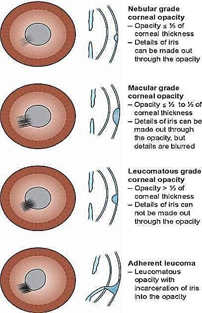

Cornea · Corneal scars
Types of corneal scars
Types of Corneal Scars
- Nebula (cloud): faint corneal scar following the healing of superficial ulcers.
- Leucoma (white): dense corneal scar following the healing of deep ulcers.
- Macula (spot): localized scar, the density is between both of them.
